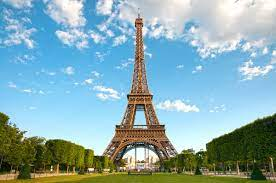

-
Coliseu
Um dos principais pontos turísticos da Itália é sem dúvida o Coliseu de Roma. É um dos monumentos mais famosos do mundo e atrai nada menos do que 4 milhões de turistas todos os anos. Sua construção se iniciou no ano de 72 d.C. e durante décadas, serviu de palco para gladiadores que lutavam entre si ou com animais para um público de mais de 70 mil romanos.

-
Torre Eiffel
É claro que a Torre Eiffel de Paris não poderia estar fora dessa lista. Construída em 1889, ela conta com 325 metros de altura e 1.665 degraus, e você não pode deixar de visitá-la quando estiver em Paris. Vista de diversas partes da capital francesa, a Torre Eiffel é um marco de como um monumento pode tornar-se um símbolo de uma nação.
